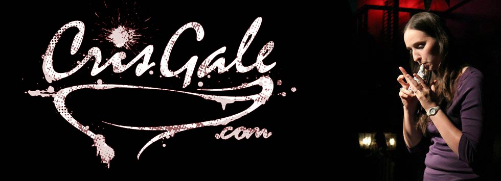

About

Cris Gale is foremost an ocarinist, but is also an ocarina designer, teacher, and popularist. Originally trained as a flutist, Cris changed her primary instrument to the ocarina in 1999. Through her deep appreciation for Koji Kondo's music from The Legend of Zelda : Ocarina of Time she discovered the instrument - and has never looked back!
Over the years her enthusiasm for the ocarina has blossomed into a career. At first she performed locally at events for family and friends, and occasionally found studio work. After winning an international star search competition in 2009, Cris began seriously pursuing the ocarina and since then has performed in some of the most prestigious venues around the world including co-headlining Carnegie Hall, released her highly praised line of Aria ocarinas, founded the United States Ocarina Association, and written the Hal Leonard Ocarina Method. With a collection of over 300 ocarinas, Cris is currently working to create the first United States Ocarina Museum.
In addition to Cris' work popularizing the ocarina, she is also very passionate about furthering cultural interchange. The ocarina enjoys a universal appeal that crosses cultural boundaries and Cris is honored to partner with a multitude of organizations to help increase cultural understanding through the ocarina. From partnerships with the Japan-American Society of DFW, and the Celebrating Asian American Heritage Foundation, to performing and holding educational panels at Anime and Video-gaming conventions, she continues to work to popularize the ocarina and continuously strives to bring the ocarina to new audiences.
When Cris isn't performing or traveling, Cris teaches, records, and produces music from her home studio in North Texas. Most recently she organized her 4th Annual US Ocarina Festival, which hosted over 20 performers from Japan including famed soloist Kazumi Sato.
Some Highlights:
2016: Organized the 2016 United States Ocarina Festival featuring 20 international performers from Japan (October 8th)
2016: Special Guest at the USA-Japan Goodwill Concert (October 6th)
2016: Authored the Hal Leonard Ocarina Method (released July 2016)
2016: Featured performer and lecturer at the 2016 World Flute Society Convention
2015: Organized and hosted the third US Ocarina Festival, featuring performers from China, Japan, and Norway (October 10th-11th)
2015: Recorded for Austin Wintory's Path to Luma OST.
2014: Organized and hosted the second United States Ocarina Festival
2014: Returned to Japan for a series of concerts (Sponsored by Night Ocarina)
2014: Co-headlined the sold out Japan-American Friendship concert at Carnegie Hall
2013: Organized the first US Ocarina Festival, featuring performers from around the United States (October 12th)
2013: Founded the United States Ocarina Association.
2013: Performed at Nintendo Merchandising Inc and Nintendo of America's "All Company" meetings.
2013: Summer Asia concert tour. (Charity Concerts Sponsored by Focalink Ocarina. Japan concerts sponsored by Night Ocarina.)
2012: Featured soloist in Austin Wintory's "Horn" OST
2012: Launched "Aria" line of ocarinas, to much acclaim and praise.
2012: Preshow performance at the DFW Legend of Zelda Symphony of the Goddesses concert.
2012: Represented the United States at International Ocarina Festival in HongSeong South Korea (Sponsored by Noble Ocarina).
2011: Represented the United States at the International Ocarina Festival in the ocarina's birthplace, Budrio Italy.
2010: Produced highly acclaimed ocarina overview Youtube video series (in partnership with STL Ocarina)
2009: Won STL Ocarina's International Star Search Competition.